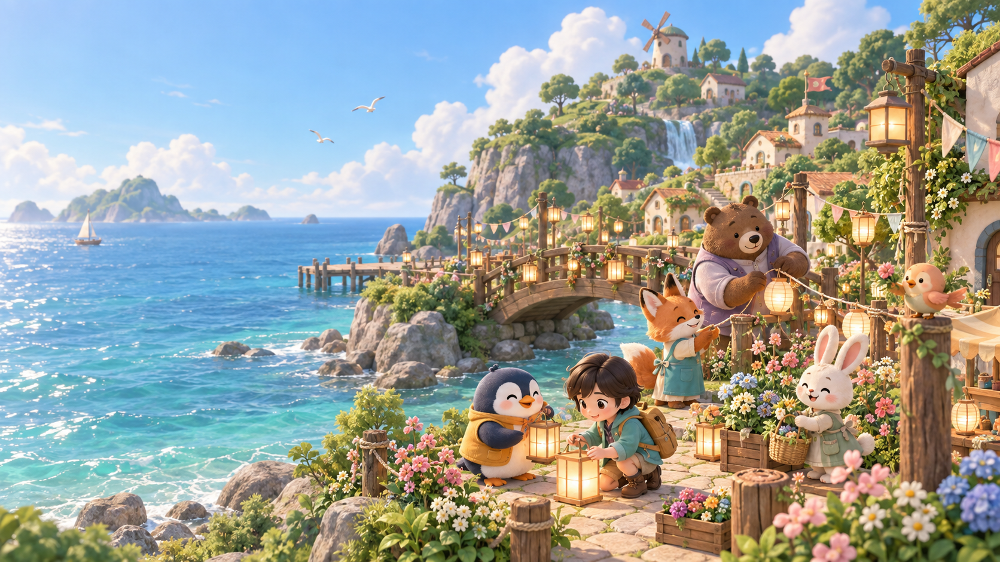

이 브라우저에서 3D 화면을 사용할 수 없어요. 다른 브라우저에서 다시 열어 주세요. 저장한 일지는 아래에서 확인할 수 있어요.

빛 축제를 부탁해!작은 부탁을 해결하고 한 권의 탐험일지를 완성해요.
작은 부탁을 해결하고, 불빛을 되찾아요.나의 발견은 한 권의 탐험일지가 돼요.
✎ 필수 기록 3편을 쓰고 서명하면 축제가 열려요.
LIGHTS ON · 우리가 함께 밝힌 숲